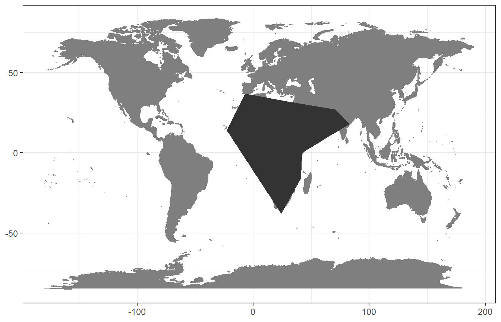

Cleaning GBIF data for the use in biogeography
Source:vignettes/Cleaning_GBIF_data_with_CoordinateCleaner.Rmd
Cleaning_GBIF_data_with_CoordinateCleaner.RmdBackground
Big data aggregators such as the Global Biodiversity Information Facility (GBIF, www.gbif.org) have vastly increased the public availability of species occurrence records, with GBIF alone comprising more than 800 million records across all taxonomic groups. The data provided via these sources have revolutionized scientific biogeography and are highly valuable for research. However, some issues exist concerning data quality, mostly because these data are comprised from a variety of different collection methods (museum specimens, scientific surveys, citizen science, population counts for conservation purposes and genetic barcoding among others) and different sources (museums, herbaria, collections of individual researchers, citizen science, photo apps) and digitized and edited by various people and algorithms at different points in time and space.
In this tutorial we provide a pipeline on how to clean occurrence records retrieved from GBIF (or any other database) using CoordinateCleaner and meta data. The tutorial includes major steps we consider necessary, but by no means is complete and we explicitly encourage you to explore your data further before use. For the tutorial we will use a data set of occurrence records of a single species (lion, Panthera leo) downloaded from GBIF. On this example we can gauge the quality of cleaning steps, because we already have a good idea where we expect lions to occur. Of course, usually for multi-species data sets we do not have this kind of information, and that is the whole point of the automated cleaning. You can easily follow the tutorial using your own data instead. For the tutorial we will assume a global macroecological analysis with a resolution of about 100km as downstream analyses. Remember to adjust test sensitivity, if your analyses have a coarser or finer resolution.
With this tutorial you will be able to:
- Visualize the data and identify potential problems
- Use CoordinateCleaner to automatically flag problematic records
- Use GBIF provided meta-data to improve coordinate quality, tailored to your downstream analyses
- Use automated cleaning algorithms of CoordinateCleaner to identify problematic contributing datasets
Identifying erroneous coordinates with CoordinateCleaner
The clean_coordinates function is a wrapper function around all record-level tests of CoordinateCleaner. The idea behind these tests is to use geographic gazetteers to identify records that are most likely erroneous (or very imprecise). We based the choice of tests on common problems observed in biological collection databases (Maldonado et al., 2015), including assignment to country centroids, sea coordinate and outliers among others. You can get an overview over the individual tests using ?clean_coordinates or via the package vignettes. This tutorial assumes occurrence data in the format as downloaded from GBIF, for other formats you might need to adapt the column names. You might need to install some of the required packages for the tutorial using install.packages.
Install CoordinateCleaner
You can install the latest stable version of CoordinateCleaner from CRAN using install.packages("CoordinateCleaner"). Alternatively you can install the latest development version from GitHub using the devtools package. We recommend the latter, to stay up-to-date. Also, make sure to have the latest R version installed.
install.packages("devtools") library(devtools) install_github("ropensci/CoordinateCleaner")
Set up libraries and data
You might need to confirm to install the rnaturalearth package when loading CoordinateCleaner
library(countrycode) library(CoordinateCleaner) library(dplyr) library(ggplot2) library(rgbif) library(sp) #obtain data from GBIF via rgbif dat <- occ_search(scientificName = "Panthera leo", limit = 5000, hasCoordinate = T) dat <- dat$data # names(dat) #a lot of columns #select columns of interest dat <- dat %>% dplyr::select(species, decimalLongitude, decimalLatitude, countryCode, individualCount, gbifID, family, taxonRank, coordinateUncertaintyInMeters, year, basisOfRecord, institutionCode, datasetName) # remove records without coordinates dat <- dat%>% filter(!is.na(decimalLongitude))%>% filter(!is.na(decimalLatitude))
Visualize the data on a map
#plot data to get an overview wm <- borders("world", colour="gray50", fill="gray50") ggplot()+ coord_fixed()+ wm + geom_point(data = dat, aes(x = decimalLongitude, y = decimalLatitude), colour = "darkred", size = 0.5)+ theme_bw()
Occurrence records for Panthera leo obtained from GBIF.
This map clearly indicates, that we need to prepare the data further, if we want them to represent the current day (or historic) distribution of lions.
Use CoordinateCleaner to automatically flag problematic records
Option A) Using the clean_coordinates wrapper function
As a first step we will run the automatic cleaning algorithm of CoordinateCleaner. The clean_coordinates function is a wrapper around a large set of automated cleaning steps to flag errors that are common to biological collections, including: sea coordinates, zero coordinates, coordinate - country mismatches, coordinates assigned to country and province centroids, coordinates within city areas, outlier coordinates and coordinates assigned to biodiversity institutions. You can switch on each test individually using logical flags, modify the sensitivity of most individual tests using the “.rad” arguments, and provide custom gazetteers using the “.ref” arguments. See ?clean_coordinates for help. To use the country - coordinate mismatch test we need to convert the country from ISO2 to ISO3 format.
#convert country code from ISO2c to ISO3c dat$countryCode <- countrycode(dat$countryCode, origin = 'iso2c', destination = 'iso3c') #flag problems dat <- data.frame(dat) flags <- clean_coordinates(x = dat, lon = "decimalLongitude", lat = "decimalLatitude", countries = "countryCode", species = "species", tests = c("capitals", "centroids", "equal","gbif", "institutions", "zeros", "countries")) # most test are on by default ## Testing coordinate validity ## Flagged 0 records. ## Testing equal lat/lon ## Flagged 6 records. ## Testing zero coordinates ## Flagged 4 records. ## Testing country capitals ## Flagged 23 records. ## Testing country centroids ## Flagged 9 records. ## Testing country identity ## Flagged 234 records. ## Testing GBIF headquarters, flagging records around Copenhagen ## Flagged 0 records. ## Testing biodiversity institutions ## Flagged 0 records. ## Flagged 265 of 4028 records, EQ = 0.07. summary(flags) plot(flags, lon = "decimalLongitude", lat = "decimalLatitude")

Records flagged by the automated cleaning.
## .val .equ .zer .cap .cen .con .gbf .inst
## 0 6 4 23 9 234 0 0
## .summary
## 265The automatic test flagged 6.6% of the records. For the purpose of this tutorial we will exclude the flagged records, but in general it is recommendable to explore them further.
#Exclude problematic records dat_cl <- dat[flags$.summary,] #The flagged records dat_fl <- dat[!flags$.summary,]
Option B) Using the magrittr pipe (%>%)
Alternatively, you can run all tests implemented in CoordinateCleaner with a individual function and connect them using the magrittr pipe operator, which will directly result in a data.frame comprising only cleaned records.
#to avoid specifying it in each function names(dat)[2:3] <- c("decimallongitude", "decimallatitude") clean <- dat%>% cc_val()%>% cc_equ()%>% cc_cap()%>% cc_cen()%>% cc_coun(iso3 = "countryCode")%>% cc_gbif()%>% cc_inst()%>% cc_sea()%>% cc_zero()%>% cc_outl()%>% cc_dupl()
In this way, you can also add the individual test results as columns to your initial data.frame:
Temporal outliers
While the cc_outl function identifies geographic outliers, record in GBIF migh also have doubtful temporal information, i.e. for the time of collection, which can be problematic for example for analyses of range dynamics. The cf_age function used for fossil cleaning can also be used to check GBIF records for temporal outliers.
flags <- cf_age(x = dat_cl, lon = "decimalLongitude", lat = "decimalLatitude", taxon = "species", min_age = "year", max_age = "year", value = "flagged") ## Testing temporal outliers on taxon level ## Flagged 289 records. dat_cl[!flags, "year"] ## [1] 1994 1994 1994 1994 1994 1994 1993 1992 1992 1992 1992 1992 1992 1992 1991 ## [16] 1991 1991 1991 1991 1990 1990 1989 1989 1989 1989 1989 1989 1989 1989 1989 ## [31] 1988 1988 1988 1988 1988 1988 1988 1988 1988 1988 1988 1988 1988 1988 1988 ## [46] 1988 1988 1988 1988 1988 1988 1988 1988 1988 1988 1988 1988 1988 1988 1988 ## [61] 1988 1988 1988 1987 1987 1987 1986 1986 1985 1985 1985 1985 1985 1984 1984 ## [76] 1984 1984 1984 1984 1983 1983 1983 1983 1983 1983 1983 1983 1983 1983 1983 ## [91] 1983 1982 1982 1982 1981 1981 1980 1980 1980 1980 1980 1980 1980 1980 1980 ## [106] 1978 1978 1974 1972 1972 1972 1970 1970 1970 1970 1970 1970 1970 1970 1969 ## [121] 1969 1969 1969 1969 1969 1969 1969 1969 1969 1969 1969 1968 1968 1968 1968 ## [136] 1967 1967 1967 1967 1967 1966 1966 1966 1966 1966 1966 1966 1965 1964 1963 ## [151] 1960 1959 1959 1959 1958 1958 1951 1949 1949 1948 1948 1948 1948 1948 1948 ## [166] 1948 1948 1948 1948 1948 1948 1948 1948 1948 1948 1948 1948 1948 1948 1948 ## [181] 1948 1948 1948 1948 1948 1941 1941 1941 1941 1939 1938 1938 1938 1938 1937 ## [196] 1937 1937 1937 1937 1937 1937 1936 1936 1931 1931 1931 1931 1931 1931 1930 ## [211] 1930 1930 1930 1930 1930 1930 1930 1930 1929 1929 1929 1929 1929 1929 1929 ## [226] 1929 1928 1928 1928 1928 1928 1928 1928 1928 1928 1927 1927 1927 1927 1927 ## [241] 1927 1927 1927 1927 1927 1927 1927 1927 1927 1927 1927 1927 1923 1923 1922 ## [256] 1920 1920 1913 1912 1912 1912 1912 1912 1912 1912 1911 1911 1911 1911 1911 ## [271] 1911 1911 1909 1909 1906 1905 1905 1905 1905 1905 1905 1905 1898 1898 1885 ## [286] 1882 1800 1800 1800 dat_cl <- dat_cl[flags, ]
Improving data quality using GBIF meta-data
That helped a lot, but unfortunately some unwanted records remain, especially within Europe (Fig. ). This is mostly because we have used the occurrence records uncritically and ignored the meta-data. GBIF offers a whole lot of useful meta-data which we will use now to further refine quality of our dataset. First we’ll remove coordinates with very low precision and from unsuitable data sources. We will remove all records with a precision below 100 km as this represent the grain size of our downstream analysis, but we recommend you to chose it based on your downstream analyses. We also exclude fossils as we are interested in recent distributions; and records from unknown sources, as we deem them not reliable enough.
#Remove records with low coordinate precision hist(dat_cl$coordinateUncertaintyInMeters / 1000, breaks = 20)
A histogram of the coordinate precision in the dataset..
dat_cl <- dat_cl %>% filter(coordinateUncertaintyInMeters / 1000 <= 100 | is.na(coordinateUncertaintyInMeters)) #Remove unsuitable data sources, especially fossils #which are responsible for the majority of problems in this case table(dat$basisOfRecord) ## ## FOSSIL_SPECIMEN HUMAN_OBSERVATION MACHINE_OBSERVATION MATERIAL_SAMPLE ## 227 3398 3 32 ## OBSERVATION PRESERVED_SPECIMEN UNKNOWN ## 1 244 123 dat_cl <- filter(dat_cl, basisOfRecord == "HUMAN_OBSERVATION" | basisOfRecord == "OBSERVATION" | basisOfRecord == "PRESERVED_SPECIMEN")
In the next step we will remove records with suspicious individual counts. GBIF includes few records of absence (individual count = 0) and suspiciously high occurrence counts, which might indicate inappropriate data or data entry problems.
#Individual count table(dat_cl$individualCount)
##
## 0 1 2 3 4 5 6 8 9 11 14 15 20
## 3 60 37 6 7 5 5 1 3 3 1 1 1dat_cl <- dat_cl%>% filter(individualCount > 0 | is.na(individualCount))%>% filter(individualCount < 99 | is.na(individualCount)) # high counts are not a problem
We might also want to exclude very old records, as they are more likely to be unreliable. For instance, records from before the second world war are often very imprecise, especially if they were geo-referenced based on political entities. Additionally old records might be likely from areas where species went extinct (for example due to land-use change).
#Age of records table(dat_cl$year)
##
## 1995 1996 1997 1998 1999 2000 2001 2002 2003 2004 2005 2006 2007 2008 2009 2010
## 4 16 6 13 81 24 13 15 25 19 35 43 58 63 56 67
## 2011 2012 2013 2014 2015 2016 2017 2018 2019 2020
## 101 131 124 247 256 213 376 389 467 150dat_cl <- dat_cl%>% filter(year > 1945) # remove records from before second world war
On top of the geographic cleaning, we also want to make sure to only include species level records and records from the right taxon. The latter is not a problem in this case, as we only have one species, but it can be helpful for large datasets. Taxonomic problems such as spelling mistakes in the names or synonyms can be a severe problem. We’ll not treat taxonomic cleaning here, but if you need to, check out the taxize R package or the taxonomic name resolution service (plants only).
table(dat_cl$family) #that looks good ## ## Felidae ## 2992 dat_cl <- dat_cl%>% filter(family == 'Felidae') table(dat_cl$taxonRank) # this is also good ## ## SPECIES SUBSPECIES ## 1108 1884
We excluded almost 50% of the initial data points with the data cleaning, and the general picture has improved considerably. We confined the records mostly to what can be considered current day distribution of the species of interest (Fig. ).
We have, however, also lost quite a number of records. In general, there is no “one-size-fits-it-all” for data quality of geographic species occurrence records. Of course highest coordinate precision is desirable, but what is acceptable will strongly depend on the downstream analyses. For species distribution modelling, usually high precision is necessary e.g. 1-10 km, but for other analyses such as biogeographic reconstructions using tectonic plates, a record might be considered good enough quality, as long as it is on the right continent. As another example for conservation purposes it might be sufficient to know that a species is present within a certain country.
Improving data quality using external information
Figure shows the success of automated cleaning. However, three records within Europe remain. A short inspection of the data suggests that these are a dubious human observation and five specimens, potentially assigned to their specimen location, or fossils with misclassified meta-data. One option to automatically flag these records is to rerun the outlier test on the cleaned data. However, this would most likely also flag the isolated Indian population (which is a true presence) as problematic.
Flag records based on fixed longitude and latitude
The first option alternative is to exclude records outside a certain study extent. In our example this is the easiest solution because we know that lions do not occur in high latitudes any more.
#exclude based on study area dat_fin <- filter(dat_cl, decimalLatitude < 40)
Flag records based on species natural ranges
In cases where simple latitudinal or longitudinal borders are not useful, an alternative is to use species ranges from external source as reference and flag all records falling outside these ranges. For amphibians, birds, mammals and reptiles the International Union for the conservation of nature (IUCN) provides detailed shape files of species’ natural distribution ranges. These can be downloaded for free at https://www.iucnredlist.org/resources/spatial-data-download. CoordinateCleaner implements a straight forward way to use these, or any other, ranges to flag records in the cc_iucn function. Since downloading the IUCN shapes requires log-in we will approximate lion’s natural range from scratch for our example. For plants check out the botanical countries of the World Checklist of selected plant families.
#create simple natural range for lions range <- Polygon(cbind(c(-23, -7, 31, 71, 83, 42, 41, 24, -23), c(14, 37, 32, 27, 18, 0, -16, -38, 14))) range <- Polygons(list(range), ID = c("A")) wgs84 <- "+proj=longlat +datum=WGS84 +no_defs +ellps=WGS84 +towgs84=0,0,0" range <- SpatialPolygons(list(range), proj4string = CRS(wgs84)) ## Warning in showSRID(uprojargs, format = "PROJ", multiline = "NO"): Discarded datum WGS_1984 in CRS definition, ## but +towgs84= values preserved df <- data.frame(species = c("Panthera leo"), row.names = c("A")) nat_range <- SpatialPolygonsDataFrame(range, data = as.data.frame(df)) # Visualize range plo <- fortify(nat_range) ## Regions defined for each Polygons ggplot() + borders("world", colour="gray50", fill="gray50")+ geom_polygon(data = plo, aes(x = long, y = lat, group = group))+ theme_bw()+ theme(legend.position = "none", axis.title = element_blank())

# run cc_iucn() range_flags <- cc_iucn(x = dat_cl, range = nat_range, lon = "decimalLongitude", lat = "decimalLatitude", value = "flagged") ## Testing natural ranges ## Warning in sp::proj4string(range): CRS object has comment, which is lost in ## output ## Warning in sp::proj4string(range): CRS object has comment, which is lost in ## output ## Warning in cc_iucn(x = dat_cl, range = nat_range, lon = "decimalLongitude", : ## reprojecting reference to '+proj=longlat +datum=WGS84 +no_defs' ## Flagged 92 records. dat_fin <- dat_cl[range_flags, ]
The dataset of occurrence of lions after different cleaning phases.
Identifying problematic data sets
Some types of potentially problematic coordinates can cause bias, but are not identifiable on record-level if the relevant meta-data are missing. This is especially the case if the erroneous records have been combined with precise GPS-based point occurrences into datasets of mixed precision. Two important cases are: (A) coordinate conversion errors based on the misinterpretation of the degree sign as decimal delimiter and (B) data derived from rasterized data collection designs (e.g. presence in a 50x50 km grid cell). CoordinateCleaner implements two algorithms to identify these problems on a dataset level.
Identify dataset with ddmm to dd.dd conversion error
We will first run the test for erroneous data conversion due to the misinterpretation of the degree sign as decimal delimiter. We will use the cd_ddmm function, alternatively, you can use the clean_dataset wrapper. See supplementary material S1 for a detailed description of the algorithm and implementation of the test. You can control the output of the function via the value argument.
out.ddmm <- cd_ddmm(dat_cl, lon = "decimalLongitude", lat = "decimalLatitude", ds = "species", diagnostic = T, diff = 1, value = "dataset")
This looks good. The test indicates a slightly higher fraction of records with decimals below .60 than expected at random, but this is within the expected range and thus the test indicates no bias, which is confirmed by the diagnostic plot. In the case of a strong bias, the green points would be clustered in the bottom left quarter of the plot.
Test for rasterized sampling
As a second step we will use the cd_round function to identify datasets with a significant proportion of coordinates that have been collected in large scale lattice designs. These records might have a low precision and might therefore be problematic for some analyses. For instance presence derived from a 1 degree grid of a national atlas might be to coarse for small scale species distribution models.
par(mfrow = c(2,2), mar = rep(2, 4)) out.round <- cd_round(dat_fin, lon = "decimalLongitude", lat = "decimalLatitude", ds = "species", value = "dataset", T1 = 7, graphs = T) ## Testing for rasterized collection
Diagnostic plots testing for rasterized sampling or excessive rounding. The left panel shows histograms of the record distribution, the right panel shows the autoorrelation plots. The upper panel shows longitude, the lower panel shows latitude. The logical flag in the heading of the right panel indicates the binary flag.
These results look good. The dataset does not show rasterized collection schemes (see Supplementary material S1 for examples of biased datasets). The test has detected and flagged some small scale and low intensity periodicity in the longitude coordinates, however, the entire dataset is only flagged if both longitude and latitude show a pattern (as expected from rasterized sampling). You can modify the test sensitivity using various arguments. See ?cd_round for more information.
The lion dataset is relatively small and consistent, at least in the way that it only comprises on species. For larger scale analyses you might need to deal with larger datasets, composed from a larger variety of sources.